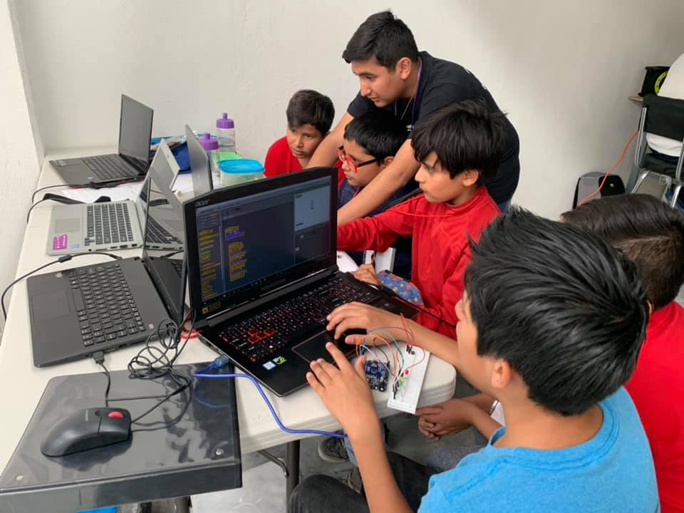
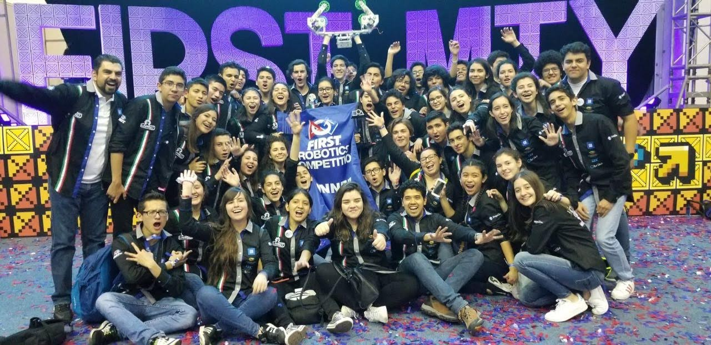

Objetivo:
Desarrollador de videojuegos.
Experiencia:
Globla Gam Jam
He participado en hackatones de videojuegos llamados Global Gam Jam en los años de 2020 y 2021. En donde desarrolle un juego desde 0 en tan solo un fin de semana y con un tema sorpres que se revela al inicio de ese fin de semana.
INC MTY
He participado en los retos Bus Challenge del INC MTY en los años 2018 y 2019. En los cuales desarrolle junto con un equipo ideas de negocio en una semana, que resolvieran alguna problematica de la sociedad.
Technovation-Teckers
Durante el año de 2019 participe como instructor de robotica para niños, en donde les enseñaba robotica basica con arduino, y los ayudaba para que pensaran en un proyecto tecnologico que ayudara en alguna problematica a la sociedad.
Lambot
Durante mi preparatoria (2015-2018) participe en un equipo de robotica en la competencia RFC en el area de programacion, en donde creabamos un robot desde 0 a lo largo de 2-3 meses que pudiera completar diferentes retos, y con el que ibamos a competir a nivel nacional e internacional. Y siendo Lambot 3478 el mejor equipo de RFC en todo Mexico.
Educacion:
2018-2023
Ingenieria en Sistemas Computacionales Tecnologico de Monterrey campus Queretaro
2015-2018
Preparatoria Tecnologico de Monterrey campus San Luis Potosi
Intereses:
Entre mis intereses personales estan los videojuegos, me gusta bastante jugar videojuegos. Me gusta nadar, es mi deporte favorito. Y tambien me gusta mucho jugar ajedrez.